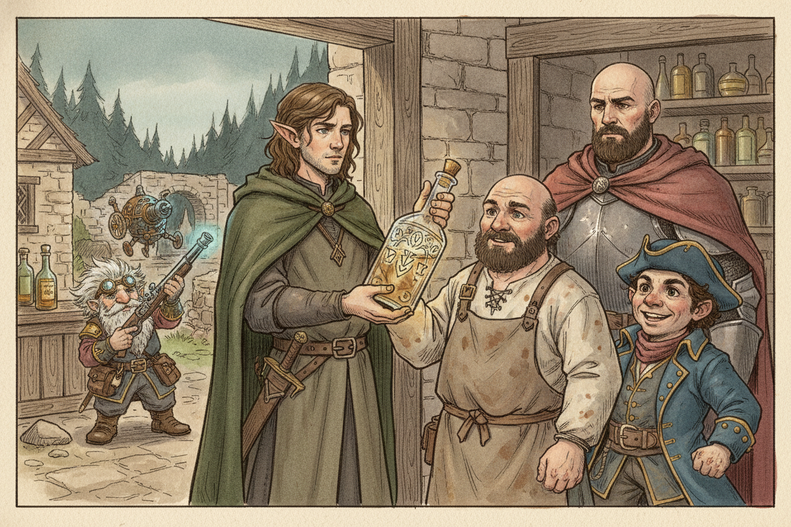
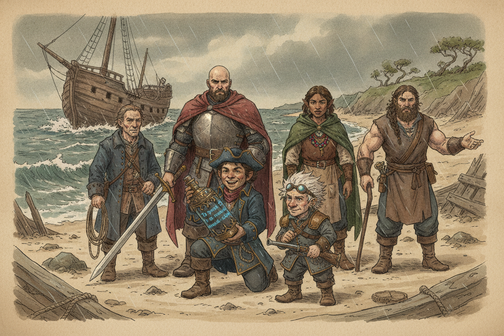
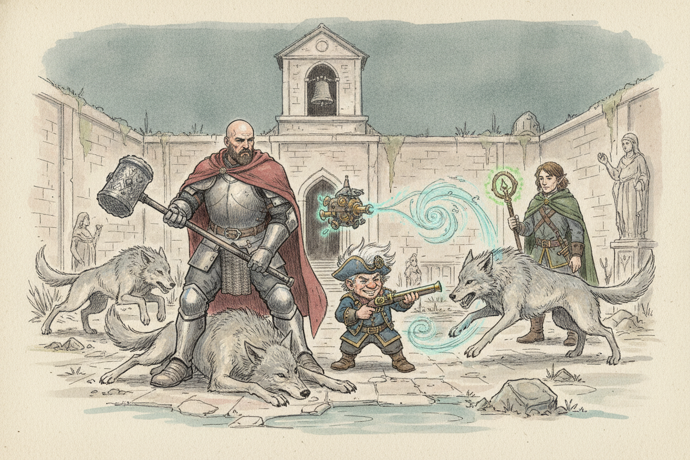

Session 2025-09-23

In brief: The crew of the wrecked True Hand finds a goblin-overrun Nightstone and clears it room by room.
A bottle to deliver

The session opened in Nightstone, a small village at the edge of Ardeep Forest, where the party had come to deliver an ornate bottle to Molak — the local innkeeper and the village's chief font of regional gossip. Ardeep itself is a favored hunting ground of Faerûn's nobles.
Flashback: the wreck

The bottle, it turned out, had been salvaged from the wreck of the True Hand off the coast just south of Nightstone. The session jumped back to that wreck: four survivors clambered ashore alongside the party — Ol' Rourke, the ship's navigator; Fish Hook Finn, a deck hand; Liera of the Pearl Isles, the cook; and Garret "Ox" Dorn, a sailor. From the wreckage the crew dug out an ornate bottle inscribed in Primordial: "To speak my name is to unmake chains."
On the trail toward Nightstone they met two goblins charging an extortionate "toll." The crew killed them and walked on.
Nightstone in ruins

Back in the present, Nightstone was unrecognisable. The drawbridge lay down, dire wolves were tearing apart a dog in the courtyard, and the temple bell was ringing in panic. From the watchtower the crew tried to work out who was ringing it. Fiz used Magical Tinkering to inscribe a stone with a brief message — stop ringing if you need help — and dropped it down the tower with Mage Hand. The bell fell silent.
The temple

Sneaking into the temple, the crew found two goblins in the bell tower — not the villagers they had feared for. They killed both goblins. Slipping back out, they were spotted by the dire wolves still ranging the courtyard. The party stood and fought, and the wolves did not survive.
What's next
- Find Molak, if he yet lives, and deliver his bottle.
- Find out what became of Nightstone's people — and who held the village before the goblins took it.
- Learn the name of the spirit in the bottle. The Primordial inscription suggests a chained genie.
Original session notes (Fiz's POV)
In Nightstone, a village near Ardeep forest. Ardeep is a popular place for nobles to hunt. Meet Molak, we’re delivering a bottle to him, he runs the inn, knows a lot about local happenings
Flashback Our ship has wrecked off the coast near Nightstone
Survivors: Ol' Rourke (navigator), Fish Hook Finn (deck hand), Liera (of the Pearl Isles, cook), Garret “Ox” Dorn (sailor)
We salvage an ornate bottle, writing on it in exotic language, primordial, “To speak my name is to unmake chains”
On the trail to Nightstone we meet two goblins charging a toll, kill them
Back to present Village of Nightstone is ruined, drawbridge down, huge wolves in courtyard devouring a dog, go up watch tower, bell ringing in temple, send msg to bell tower (use artificer magical tinkering to write on rock, then use mage hand to drop rock down tower) to stop ringing if they need help, ringing stops
Sneak into temple, two goblins in bell tower, kill goblins, try to sneak out of village, wolves see us, kill them